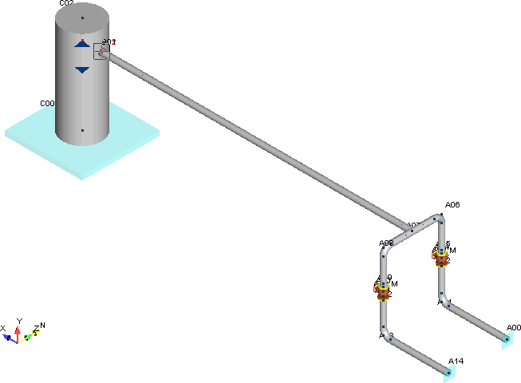

Opening the Piping System
| Warning: | Ensure that you have properly saved the Frame model before beginning this step. |
1. Select File > File > Open > AutoPIPE Database (*.dat) to display the Open dialog.
- Select the Tutor2.dat file from the list, then press Open (you can also double-click on this file
to open it directly).
- Select View > Orientation > Vector and then select Iso (180 deg) to get the view direction shown in the following figure:
